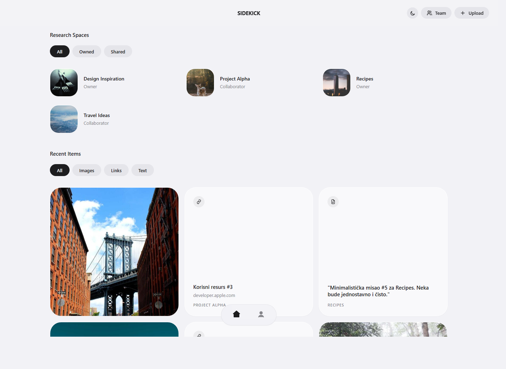
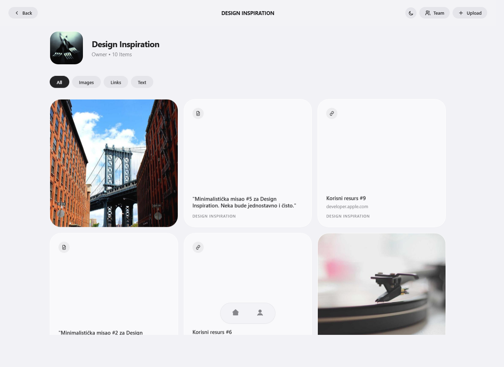
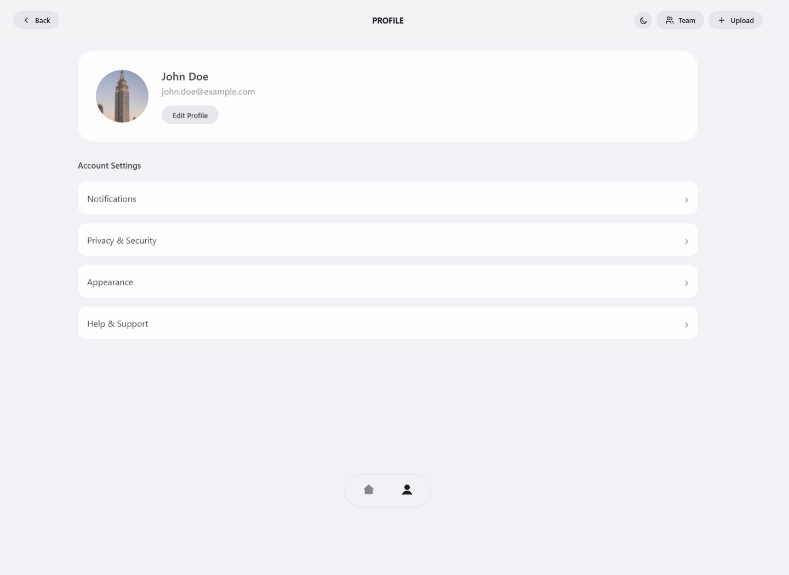
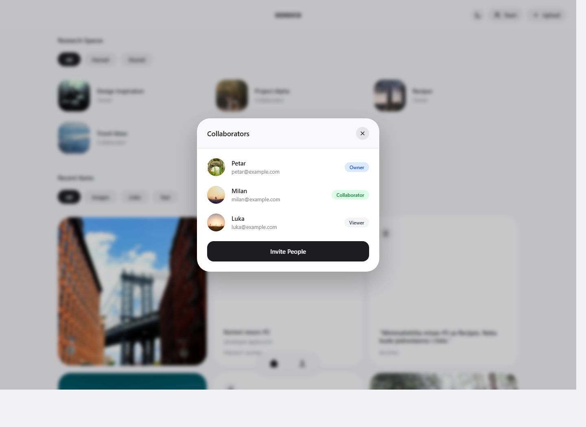

Prostori
Korisnik može da pregleda svoje i deljene prostore kroz jednostavne filtere.
SideKick prototip
SideKick je aplikacija za organizovanje istraživačkih prostora i sačuvanih kartica. Prototip prikazuje osnovni tok finalne verzije: pregled prostora, ulazak u konkretan prostor, pregled profila i timski modal za saradnike.
Korisnik može da pregleda svoje i deljene prostore kroz jednostavne filtere.
Slike, linkovi i tekstualne beleške prikazuju se kao kartice u vizuelnoj mreži.
Tim i role korisnika predstavljeni su kroz čist modal za pregled saradnika.
Početna strana prikazuje istraživačke prostore i najnovije kartice. Filteri ostaju jednostavni: svi prostori, korisnikovi prostori i deljeni prostori.

Svaki prostor ima naslov, rolu i vizuelni omot koji pomaže korisniku da ga brzo prepozna.
Kartice su podeljene po tipu sadržaja: slike, linkovi i tekst.
Kada korisnik otvori prostor, fokus je na sadržaju tog prostora. Zaglavlje prikazuje naziv, rolu korisnika i broj sačuvanih stavki.

Sadržaj prostora prikazuje se bez dodatnog ometanja, sa filterima za tip kartice.
Ovaj ekran je prirodno mesto za dodavanje novih kartica i upravljanje pristupom prostoru.
Profil prikazuje osnovne informacije o korisniku i podešavanja naloga. Navigacija ostaje ista kako bi prelaz između glavnih delova aplikacije bio brz.

Kartica profila sadrži avatar, ime, email i akciju za izmenu profila.
Lista podešavanja je organizovana kao jasne stavke koje vode ka detaljnim ekranima.
Modal koristi isti vizuelni jezik kao ostatak aplikacije: zamućena pozadina, zaobljeni panel i jasne role za članove tima.

Saradnici su prikazani sa imenom, email adresom i rolom: vlasnik, saradnik ili posmatrač.
Akcija za pozivanje novih ljudi ostaje vidljiva i dostupna na dnu modala.